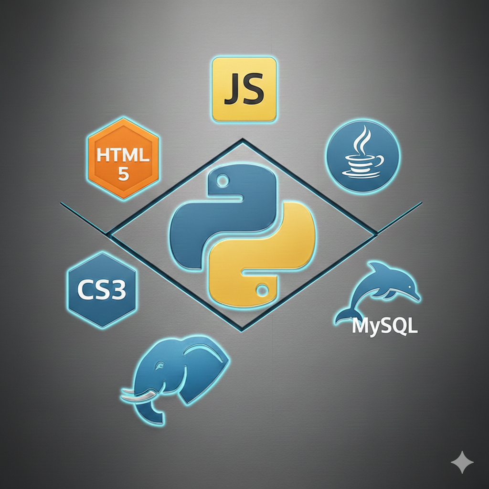

Minhas experiências
- Linguagens de programação como:
Python, Java e JavaScript
- Ferramentas de desenvolvimento Web como:
HTML5 e CSS3
- Ambientes de criação e manipulação de bancos de dados relacionais como:
MySql e PostgreeSQL
- Linguagem Python aplicada para Ciência de dados, usando ferramentas como Jupiter e google colab, somadas à bibliotecas como Numpy, Pandas, Matplotlib, dentre outras
